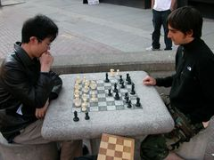

This chess playing system is like email chess or corresponding chess, where each player moves one move per day, for example. The game is managed by the server, and you can play chess with your web browser. The followig image (click to enlarge) shows the screen when the player is moving his h1 rook to d1. The player first click h1 square, and then click d1 square. You can confirm your move by the black circles at h1 and d1 squares, and "Rh1-d1" notation in the text box at the Move Entry. After that, click "Submit" button to determine your move.
First of all, please read the following instruction.
As explained in the above document, you first create a new game, and play chess with your web browser. You can move your pieces with a chess board that appears on your screen.
First you have to find your opponent to start your game.
You can receive notification by selecting "Notify me when a new move is made in this game". By default, this notification will be sent to your inbox in seki.jpn.org account, which means that you will have to log in to confirm if the notification message arrives, and this is generally not very convenient. However, you can change your setting so that the notification messages will arrive directly to your registered email address, by doing as follows.
In this way, you will have to log in only when you receive your notification email.
OK, so let's play. This picture was taken at Ithaca Commons, NY, USA. The left guy is the site owner, Katsutoshi Seki. I lived at Ithaca for about 8 months and occasionally at the weekend I played chess at Ithaca Commons with those guys who happened to come. Ithaca is a really nice city... I would love to go again. :)
This chess system uses English software, and I translated the language files into Japanese. Now it is served in bilingual mode, but some of the features are not yet in the bilingual mode. In some situations you may find only Japanese text and you might get lost. In such cases, please contact me.
Questions or comments to
{kind=link}